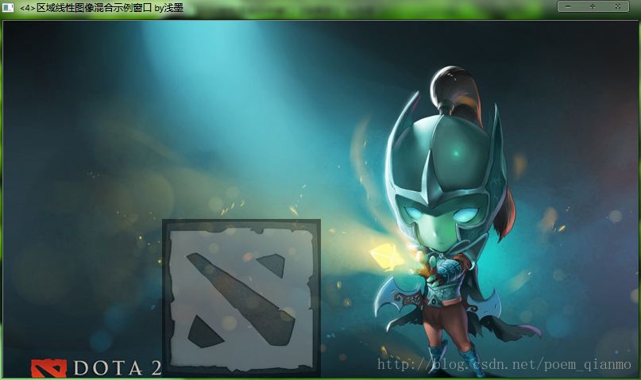
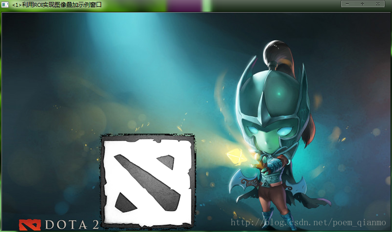
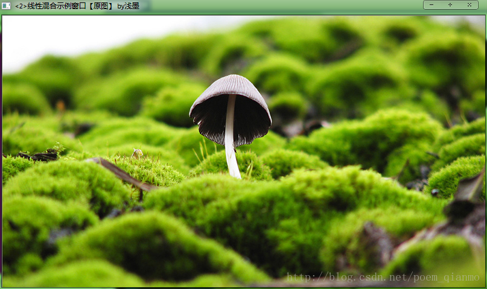
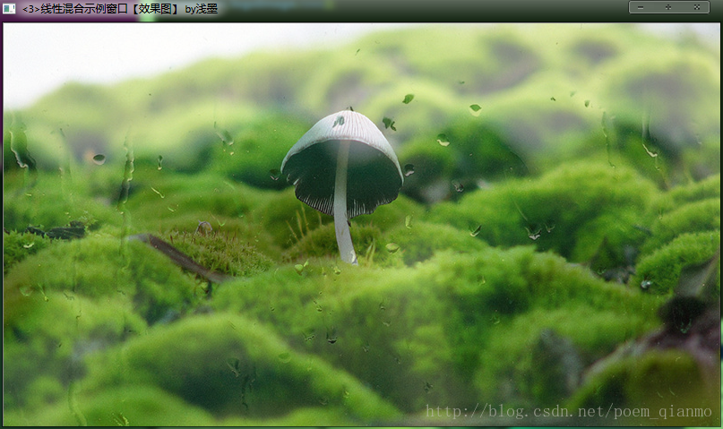

在这篇文章里，我们一起学习了在OpenCV中如何定义感兴趣区域ROI，如何使用addWeighted函数进行图像混合操作，以及将ROI和addWeighted函数结合起来使用，对指定区域进行图像混合操作。文章开头，先放一张截图。

在图像处理领域，我们常常需要设置感兴趣区域(ROI，region of interest)，来专注或者简化我们的工作过程 。也就是从图像中选择的一个图像区域，这个区域是我们图像分析所关注的重点。我们圈定这个区域，以便进行进一步处理。而且，使用ROI指定我们想读入的目标，可以减少处理时间，增加精度，给图像处理来带不小的便利。
定义ROI区域有两种方法，第一种是使用cv:Rect.顾名思义，cv::Rect表示一个矩形区域。指定矩形的左上角坐标（构造函数的前两个参数）和矩形的长宽（构造函数的后两个参数）就可以定义一个矩形区域。
//定义一个Mat类型并给其设定ROI区域 Mat imageROI; //方法一 imageROI=image(Rect(500,250,logo.cols,logo.rows)); 另一种定义ROI的方式是指定感兴趣行或列的范围（Range）。Range是指从起始索引到终止索引（不包括终止索引）的一连段连续序列。cv::Range可以用来定义Range。如果使用cv::Range来定义ROI，那么前例中定义ROI的代码可以重写为：
//方法二 imageROI=srcImage3(Range(250,250+logoImage.rows),Range(200,200+logoImage.cols)); 好了，下面我们来看一个实例，显示如何利用ROI将一幅图加到另一幅图的指定位置。大家如果需要拷贝如下的函数中的代码直接运行的话，自己建一个基于console的程序，然后把函数体中的内容拷贝到main函数中，然后找两幅大小合适的图片，加入到工程目录下，并和代码中读取的文件名一致即可。在下面的代码中，我们通过一个图像掩膜（mask），直接将插入处的像素设置为logo图像的像素值，这样效果会很赞很逼真：
xxxxxxxxxx// 函数名：ROI_AddImage（） // 描述：利用感兴趣区域ROI实现图像叠加 bool ROI_AddImage() { //【1】读入图像 Mat srcImage1= imread("dota_pa.jpg"); Mat logoImage= imread("dota_logo.jpg"); if(!srcImage1.data ) { printf("你妹，读取srcImage1错误~！ \n"); return false; } if(!logoImage.data ) { printf("你妹，读取logoImage错误~！ \n"); return false; } //【2】定义一个Mat类型并给其设定ROI区域 Mat imageROI= srcImage1(Rect(200,250,logoImage.cols,logoImage.rows)); //【3】加载掩模（必须是灰度图） Mat mask= imread("dota_logo.jpg",0); //【4】将掩膜拷贝到ROI logoImage.copyTo(imageROI,mask); //【5】显示结果 namedWindow("<1>利用ROI实现图像叠加示例窗口"); imshow("<1>利用ROI实现图像叠加示例窗口",srcImage1); return true; } 运行结果如下：

线性混合操作是一种典型的二元（两个输入）的像素操作，它的理论公式是这样的：
我们通过在范围0到1之间改变alpha值，来对两幅图像（和）或两段视频（同样为（和）产生时间上的画面叠化（cross-dissolve）效果，就像幻灯片放映和电影制作中的那样。即在幻灯片翻页时设置的前后页缓慢过渡叠加效果，以及电影情节过渡时经常出现的画面叠加效果。实现方面，我们主要运用了OpenCV中addWeighted函数，我们来全面的了解一下它：
addWeighted函数：这个函数的作用是，计算两个数组（图像阵列）的加权和。原型如下：void addWeighted(InputArray src1, double alpha, InputArray src2, double beta, double gamma, OutputArray dst, int dtype=-1);
如果用数学公式来表达，addWeighted函数计算如下两个数组（src1和src2）的加权和，得到结果输出给第四个参数。即addWeighted函数的作用可以被表示为为如下的矩阵表达式为：
dst = src1[I]*alpha+ src2[I]*beta + gamma;
其中的I，是多维数组元素的索引值。而且，在遇到多通道数组的时候，每个通道都需要独立地进行处理。另外需要注意的是，当输出数组的深度为CV_32S时，这个函数就不适用了，这时候就会内存溢出或者算出的结果压根不对。理论和函数的讲解就是上面这些，接着我们来看代码实例，以融会贯通。
x
// 函数名：LinearBlending（） // 描述：利用cv::addWeighted（）函数实现图像线性混合 bool LinearBlending() { //【0】定义一些局部变量 double alphaValue = 0.5; double betaValue; Mat srcImage2, srcImage3, dstImage; //【1】读取图像 ( 两幅图片需为同样的类型和尺寸 ) srcImage2= imread("mogu.jpg"); srcImage3= imread("rain.jpg"); if(!srcImage2.data ) { printf("读取srcImage2错误~！ \n"); return false; } if(!srcImage3.data ) { printf("读取srcImage3错误~！ \n"); return false; } //【2】做图像混合加权操作 betaValue= ( 1.0 - alphaValue ); addWeighted(srcImage2, alphaValue, srcImage3, betaValue, 0.0, dstImage); //【3】创建并显示原图窗口 namedWindow("<2>线性混合示例窗口【原图】 by浅墨", 1); imshow("<2>线性混合示例窗口【原图】 by浅墨", srcImage2 ); namedWindow("<3>线性混合示例窗口【效果图】 by浅墨", 1); imshow("<3>线性混合示例窗口【效果图】 by浅墨", dstImage ); return true; } 代码解析：首先当然是定义一些局部变量，alpha值beta值，三个Mat类型的变量。在这里我们设置alpha值为0.5。
//【0】定义一些局部变量 double alphaValue = 0.5; double betaValue; Mat srcImage2, srcImage3, dstImage; 然后读取两幅图像并作错误处理。这步很简单，直接上代码：
//读取图像 ( 两幅图片需为同样的类型和尺寸 ) srcImage2= imread("mogu.jpg"); srcImage3= imread("rain.jpg"); if(!srcImage2.data ) { printf("读取srcImage2错误~！ \n"); return false; } if(!srcImage3.data ) { printf("读取srcImage3错误~！ \n"); return false; } 在这里需要注意的是，因为我们是对 srcImage1和srcImage2求和，所以它们必须要有相同的尺寸（宽度和高度）和类型，不然多余的部分没有对应的“伴”，肯定会出问题。
进行图像混合加权操作：载入图像后，我们就可以来生成混合图像，也就是之前公式中的g(x)。为此目的，使用函数 addWeighted 可以很方便地实现，也就是因为 addWeighted 进行了如下计算：这里的对应于addWeighted的第2个参数alpha。这里的对应于addWeighted的第4个参数beta。这里的对应于addWeighted的第5个参数，在上面代码中被我们设为0.0。代码其实很简单，就是这样：
//【2】进行图像混合加权操作 betaValue = ( 1.0 - alphaValue ); addWeighted( srcImage2, alphaValue, srcImage3,betaValue, 0.0, dstImage); // 其中beta值为1-alpha，gamma值为0。 最后创建显示窗口，显示图像。运行结果首先是原图：

然后是效果图：

在前面分别介绍的设定感兴趣区域ROI和使用addWeighted函数进行图像线性混合的基础上，我们还将他们两者中和起来使用，也就是先指定ROI，并用addWeighted函数对我们指定的ROI区域的图像进行混合操作，我们将其封装在了一个名为ROI_LinearBlending的函数中，方便大家分块学习。
// 函数名：ROI_LinearBlending（） // 描述：线性混合实现函数,指定区域线性图像混合.// 利用cv::addWeighted（）函数结合定义 // 感兴趣区域ROI，实现自定义区域的线性混合 bool ROI_LinearBlending() { //【1】读取图像 Mat srcImage4= imread("dota_pa.jpg",1); Mat logoImage= imread("dota_logo.jpg"); if(!srcImage4.data ) { printf("读取srcImage4错误~！ \n"); return false; } if(!logoImage.data ) { printf("读取logoImage错误~！ \n"); return false; } //【2】定义一个Mat类型并给其设定ROI区域 Mat imageROI; //方法一 imageROI=srcImage4(Rect(200,250,logoImage.cols,logoImage.rows)); //方法二 //imageROI=srcImage4(Range(250,250+logoImage.rows),Range(200,200+logoImage.cols)); //【3】将logo加到原图上 addWeighted(imageROI,0.5,logoImage,0.3,0.,imageROI); //【4】显示结果 namedWindow("<4>区域线性图像混合示例窗口 by浅墨"); imshow("<4>区域线性图像混合示例窗口 by浅墨",srcImage4); return true; }